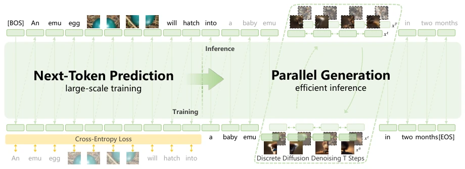
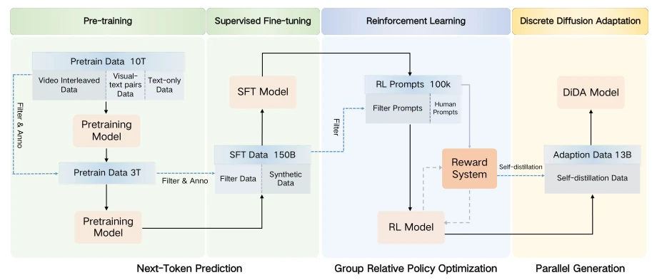
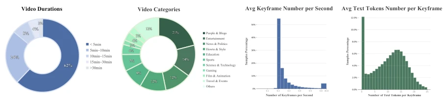
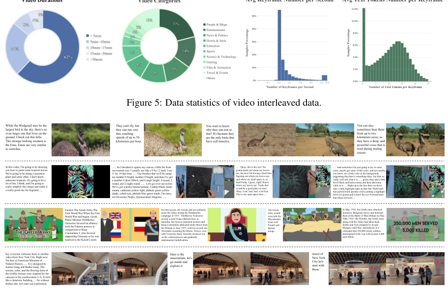
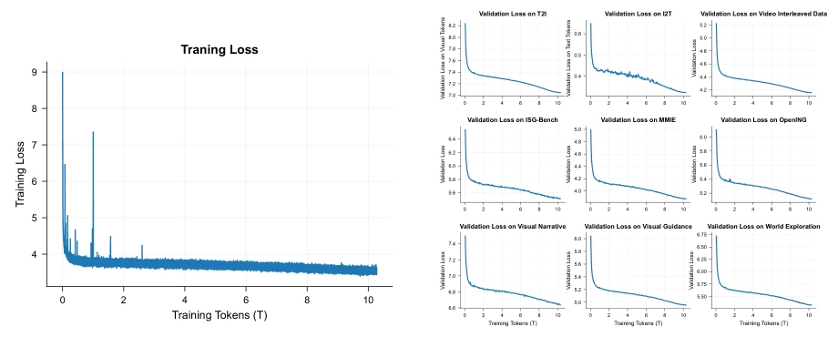
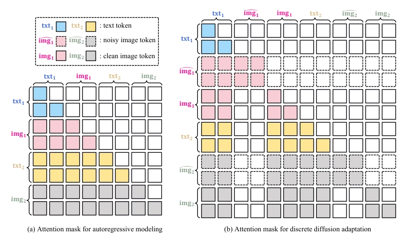
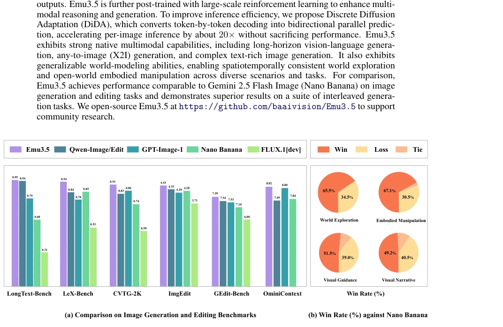
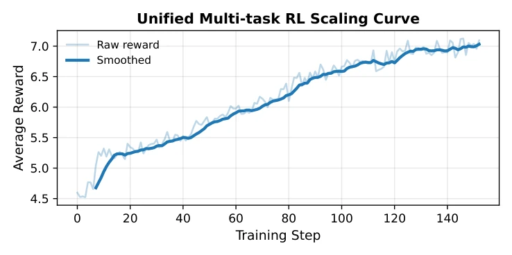
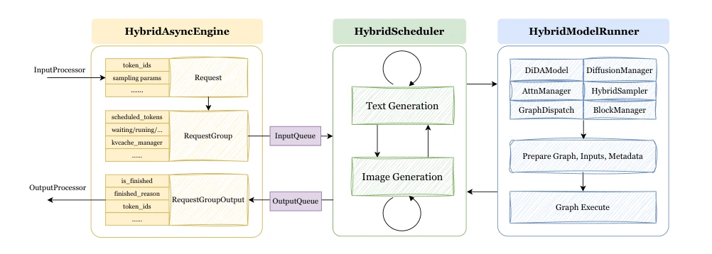

Emu3.5 claims to be a "World Learner," but in reality, it is an ultra-long video generator disguised as a world model. The training volume of 10 trillion tokens is indeed daunting, but the core logic has not escaped the trap of autoregressive prediction. The DiDA technology parallelizes image generation, accelerating by 20 times, but this is merely engineering optimization and does not change the essence of the model. The so-called "embodied operation" is more about generating text descriptions of robot action steps, rather than directly controlling the physical world. Compared to Gemini 2.5 Flash Image, it wins in image-text interleaved tasks, but is merely on par in pure image generation. This is more like an evolved version of a Multimodal Large Language Model (MLLM), rather than a true physical world simulator. Open source is a good thing, but do not mistake "generation steps" for the entirety of "embodied intelligence," after all, it has not yet learned how to truly pick up a cup.
Pure text models lack spatiotemporal perception and find it difficult to understand the physical world [1]. Although previous Emu series unified multimodal tasks, they mainly focused on short sequences or small-scale data [88, 102]. How to extend pre-training, post-training, and inference to handle long-horizon multimodal data remains a challenge. In particular, how to effectively learn video-text interleaved data, and how to efficiently predict tens of thousands of visual tokens, poses stringent requirements for pre-training, post-training, and inference. Existing methods struggle to maintain spatiotemporal consistency in long video interleaved sequences, limiting the capability of general multimodal interaction. Although recent short-clip video generation has made progress, long-horizon inference remains an open challenge [4]. Emu3.5 attempts to solve these problems by unifying prediction objectives, moving towards large-scale native vision-language generation.
The overall approach adopts a two-stage pre-training + SFT + RL pipeline. Pre-training is based on 13 trillion tokens, mainly from interleaved data of internet video frames and transcribed text, containing 63 million videos. The architecture is a 34.1B parameter Decoder-only Transformer, using an IBQ tokenizer, supporting 32k context. The training objective is unified Next-Token Prediction (NTP). The post-training stage introduces large-scale Reinforcement Learning (RL) to enhance reasoning capabilities. The inference stage proposes Discrete Diffusion Adaptation (DiDA), converting token-by-token decoding into bidirectional parallel prediction, achieving 20 times acceleration per image. Data preprocessing includes scene segmentation, ASR transcription, and multi-stage filtering to ensure quality. The Tokenizer integrates SigLIP feature distillation to enhance visual representation.

Figure 3: Overview of the Emu3.5 architecture. The model is trained end-to-end at scale with a unified next-token prediction objective. During inference, single-token prediction is accelerated via discrete diffusion adaptation, enabling bidirectional parallel generation per image.

Figure 4: Overall training pipeline of Emu3.5.

Figure 5: Data statistics of video interleaved data.

Figure 6: Video interleaved data samples from Emu3.5’s pre-training dataset.

Figure 7: Training and validation loss trends of Emu3.5 during the first stage of pre-training. The curves indicate that Emu3.5 achieves smooth and stable optimization, while maintaining consistent generalization across multiple validation datasets.

Figure 9: Discrete Diffusion Adaptation. (a) The model performs standard next-token prediction for large- scale multimodal pre-training, supervised fine-tuning, and reinforcement learning. (b) During discrete diffusion adaptation, each image is duplicated with a noisy copy. Noisy tokens attend causally to preceding clean tokens and bidirectionally to noisy tokens within the same image, while clean image and text tokens follow the original causal pattern to preceding clean tokens.
On image generation and editing benchmarks, Emu3.5 performs comparably to Gemini 2.5 Flash Image (Nano Banana), but is superior in text rendering. In interleaved generation tasks, the automatic preference evaluation win rate is 65.5%, significantly better than Nano Banana. Long-horizon visual storytelling, visual guidance, and world exploration tasks are all demonstrated. The DiDA acceleration effect is verified as effective. Ablation studies show that increasing pre-training compute can reduce OOD task loss. RL training raises the average reward from 4.5 to above 7.1. Embodied operation examples demonstrate robot clothing folding step generation, but no real physical control data is seen. It performs excellently on benchmarks such as LongText-Bench and LeX-Bench.

Figure 1: (a) Comparison with SOTA models on image generation and editing benchmarks. For editing, the specific models are Qwen-Image-Edit-2509 [106] and FLUX.1 Kontext [dev] [49]. (b) Automated preference evaluation (Win Rate[%]) against Gemini 2.5 Flash Image (Nano Banana) [92] on interleaved generation tasks.

Figure 8: Average reward steadily increases from ∼4.5 to > 7.1 during multi-task RL training.
其他图片Other Figures

Figure 10: Hybrid Inference Framework with FSM-based Scheduling.